CPPNs for Procedural Landscape Generation!


So I’ve been obsessed with CPPN’s ever since I saw this series of blogposts by Hardmaru:
- Neural Network Generative Art in Javascript
- Generating Abstract Patterns with TensorFlow
- Generating Large Images from Latent Vectors
- Generating Large Images from Latent Vectors - Part Two
- The Frog of CIFAR 10
One of the main reasons I loved this idea so much is that almost all machine learning that you see concerns itself with fixed output dimensions; at least for images. The cool thing about the CPPN is that it maps pixel coordinates, along with some configurably latent-vector z⃗, to rgb values:
cppn(x, y, z⃗) = (r, g, b)
This is cool because, there is a value defined for every point! So you can use these things to create arbitrarily-large pictures! Furthermore, for a given z⃗ we can make higher-resolution images by evaluating the network over different widths.
At Silverpond we’ve put this idea to good use in our upcoming event at Melbourne Knowledge Week.
In any case, here I’d like to document my playing-around with the idea of using CPPNs to generate 3d landscapes.
I’ve put together some pieces of code here: cppn-3d. Thanks to the amazing MyBinder you can even run the notebook online, right now, and start generating your own cool images!
To use the Python code, say, take a look at the notebook and you’ll see something like this (after imports):
latent_dim = 9
TAXICAB = ft.partial(np.linalg.norm, axis=0, ord=1)
EUCLIDEAN = ft.partial(np.linalg.norm, axis=0, ord=2)
INF = ft.partial(np.linalg.norm, axis=0, ord=np.inf)
norms = []
c = Config( net_size = 20
, num_dense = 5
, latent_dim = latent_dim
, colours = 3
, input_size = 1 + 1 + len(norms) + latent_dim
, norms = norms
, activation_function = tf.nn.tanh
)
size = 512
width = size
height = size
m = build_model(c)
z = np.random.normal(0, 1, size=c.latent_dim)
sess.run(tf.global_variables_initializer())
yss = forward(sess, c, m, z, width, height)
ys = stitch_together(yss)The magic here is that we can get quite different pictures by mucking around with the params: net_size, num_dense, norms, activation_function and basically just about anything!
The very simplistic idea I had was that we can generate images with nice smooth colours, then just map those colours to heights, and that’s the end of it! I did this in three.js and TensorFlow.js at first, with some terrible code:

It worked! You can also play with this live if you wish; it does a kind of cool animation, albeit kinda slowly.
Of course, what I really wanted was to get a feel for how “walkable” or “playable” the resulting map would be. So I found my way to Unity3D, and half-wrote half-googled a tiny script to load in the image as a height map:
using System.IO;
using UnityEngine;
public class TerrainHeight : MonoBehaviour {
public int height = 400;
public int width = 400;
public int depth = 200;
public string cppnImage = "/home/noon/dev/cppn-3d/python/multi-2.png";
void Start () {
Terrain terrain = GetComponent<Terrain>();
terrain.terrainData = GenerateTerrain(terrain.terrainData);
}
TerrainData GenerateTerrain (TerrainData data) {
data.size = new Vector3(width, depth, height);
data.SetHeights(0, 0, GenerateHeights());
return data;
}
public static Texture2D LoadPng (string filePath) {
byte[] data = File.ReadAllBytes(filePath);
Texture2D texture = new Texture2D(2, 2);
texture.LoadImage(data);
return texture;
}
float[,] GenerateHeights () {
float[,] heights = new float[width, height];
Texture2D image = LoadPng(cppnImage);
for (int x = 0; x < width; x++) {
for (int y = 0; y < height; y++) {
Color colour = image.GetPixel(x, y);
float height = colour.r
+ colour.g
+ colour.b;
heights[x, y] = height / 3;
}
}
return heights;
}
}In Unity3D, you attach this script to a terrain, then when you run it, it will set that piece of terrain to have the given heights you want!

Looks alright! Obviously my general Unity skills need work, but at least it looks something like a landscape! Here’s a few more of the top view generate by a bunch of similarly produced images:
 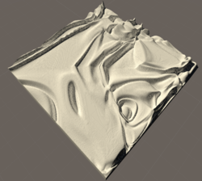
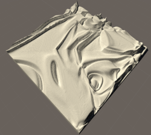 


The images that generated these (not in order) are in the maps folder:


Anyway, I hope someone finds this useful! I hope I can play with this idea a bit more! I think there’s a lot of juice to squeeze here, in terms of using CPPNs to generate different levels of detail; to add much more detail to the Unity terrain by making decisions based on height (such as where water goes, where snow starts, etc). Furthermore, it would also be neat to auto-generate town locations, and just about everything! Then of course there’s all the details of the CPPN itself to play with; the layer structure, adding more variables, using different norms to highlight different regions of the resulting image; the mind boggles at the options!
I hope this demonstrates how fun CPPNs can be!
Aside
As an aside, early in the day I was experimenting with producing large tiled images.
The basic idea is conveyed here:
On the left I have a particular image that I’ve generated. I want to continue this image downwards by one tile. On the right is the same image with the next tile.
This idea was due to Gala (who works for Neighbourlytics): basically, given that we have the optimisation machinery at hand, why not just attempt to find a new image, from the network, whose border matches at the point we’re interested in.
Initially, my idea was that I could do this by optimising over the z vector z⃗ only; i.e. leave all the other parameters of the network alone. This turned out not to work at all. I’m actually not quite sure why, because my experience with CPPNs is that if z⃗ is large, then you can get a whole bunch of variation by modifying it. In any case, I tried it, and while it did manage to make some progress, it was never really particularly good.
When that approach didn’t work, I used the one that generated the tile connections from above: I just optimised with respect to the entire CPPN network.
There were a few problems with this approach, unfortunately:
The tiles it generated were less “interesting”: In the image above, the one of the left is made of 3 tiles. The top one is the starting one; note it’s complexity. The following two tiles are very low in interesting-ness, but the final one is actually not bad. This perhaps makes sense, as when the optimiser only has to match one colour, it can allow itself some richness in the other region.
It didn’t work when I tried to match up two boundaries:

 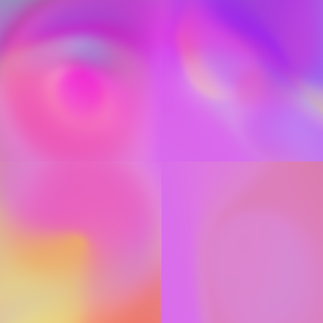
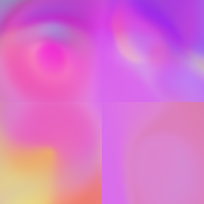  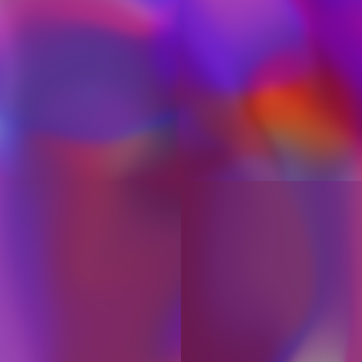
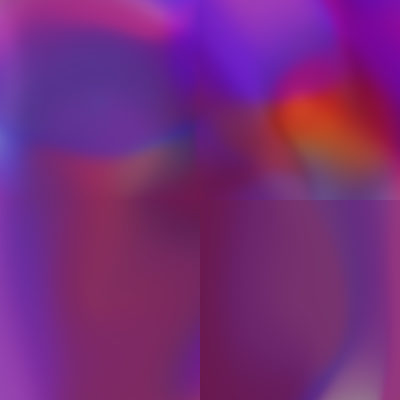
In all these pictures, the bottom-right tile is very out of sync with it’s two neighbours. This could definitely be fixed “in post”, by simplying blending it, but it’s still slightly unsatisfying that I couldn’t solve this within the CPPN framework. One original idea I had was to solve it by using (something-like) the interpolation process you see in the live JS example. Namely, we can pick two vectors $\vec{z_1}$ and $\vec{z_2}$ and move smoothly between them. When you watch this animate, you can feel like there should be some smoothing operation that would let us draw out a long line in this fashion. I think the approach would be to take, slice-by-slice, new images from vectors $\vec{z_{n+1}}$, and use the slices from them to produce a landscape. This feels slightly odd to me, but perhaps would be nice.
In the end, my realisation was that I can produce very large maps simply by increasing the richness in the CPPN: increasing the numbers of dense layers, and “net size” (units in the dense layers), and then just simply making a high-resolution version of the resulting image:
 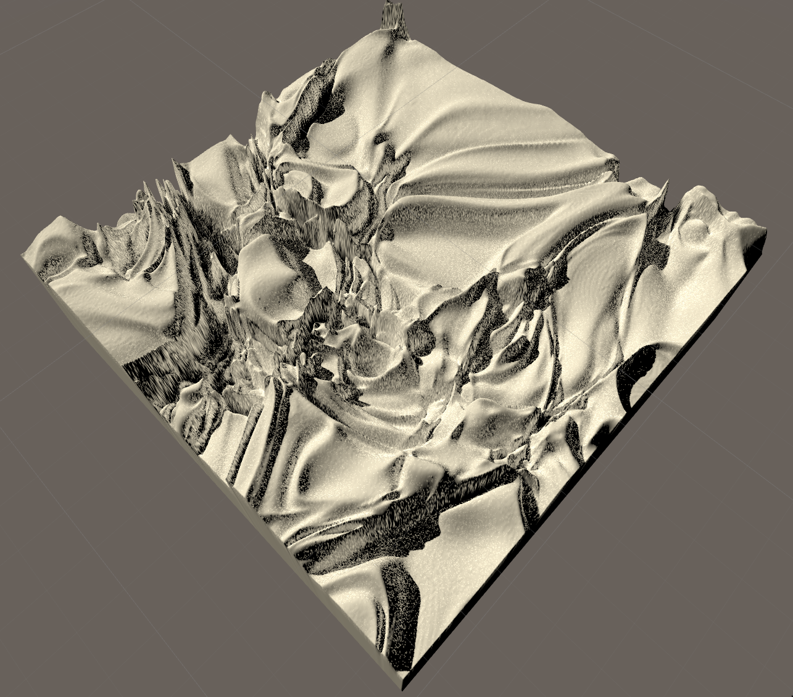
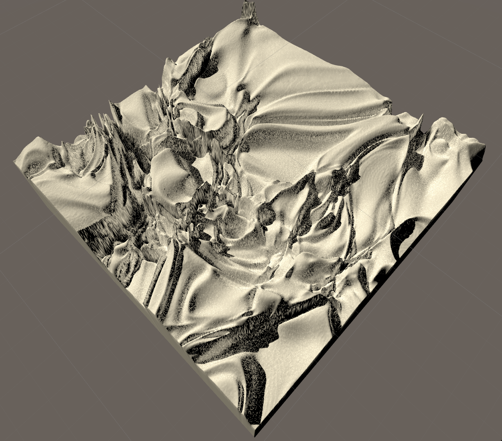
{kind=link}
In many ways I think I’m still a bit unsatisfied by this approach. I think ultimately it would be nice to have a grid-layout map:

Where each block is controlled by some vector $\vec{z_i}$, and those can be modified at will. This would definately be possible just by blending in some standard way between the particular $\vec{z_i}$-values, but I do still think there should be a CPPN-based solution. One idea Lyndon had was by directly constructing the image from the grid, and then encoding that back into the CPPN, then decoding it, to get the “closest match” that is still smooth between the borders. I think this might work, but here we don’t have an encoding network.
If you have any ideas along these lines, or find any of this useful, then I’d love to hear from you!
Bonus Content (17-Apr-2018)
I found a cool plugin in Unity — The Terrain Toolkit — that lets me easily add textures, and I worked out how to add a water plane (you just find it in the standard assets, and drag on the “Prefab”, and resize it), so we can give the maps a more earthly look and feel:
 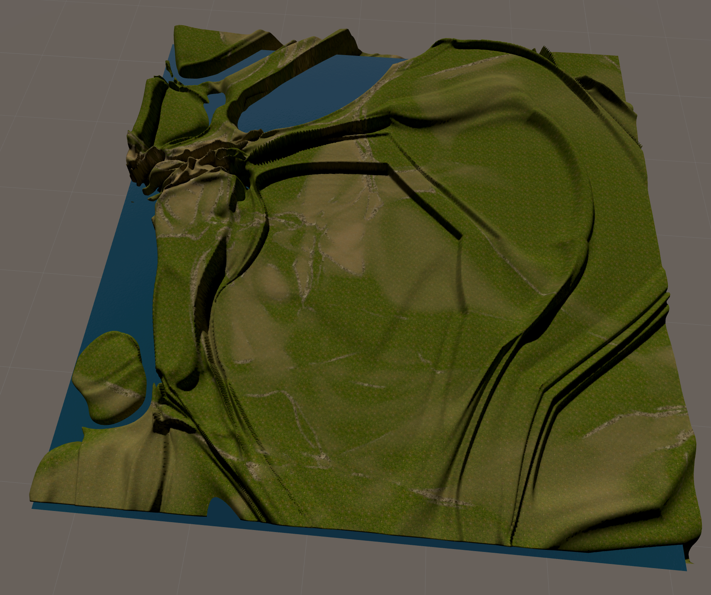 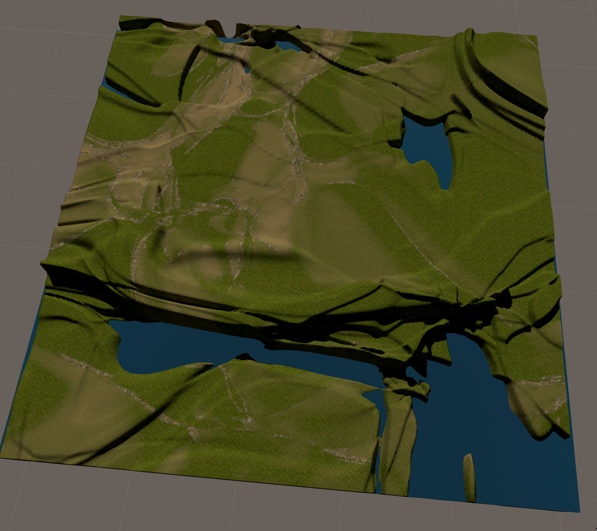
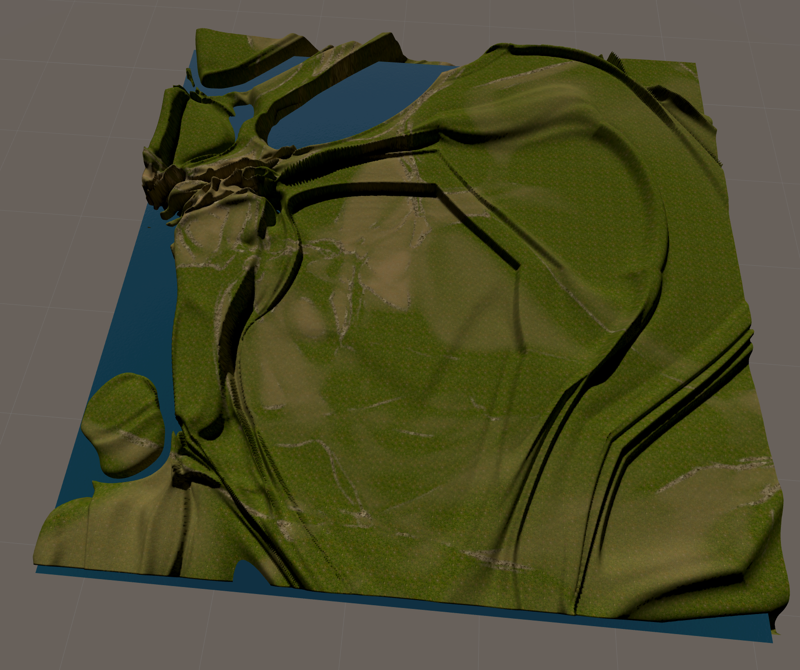 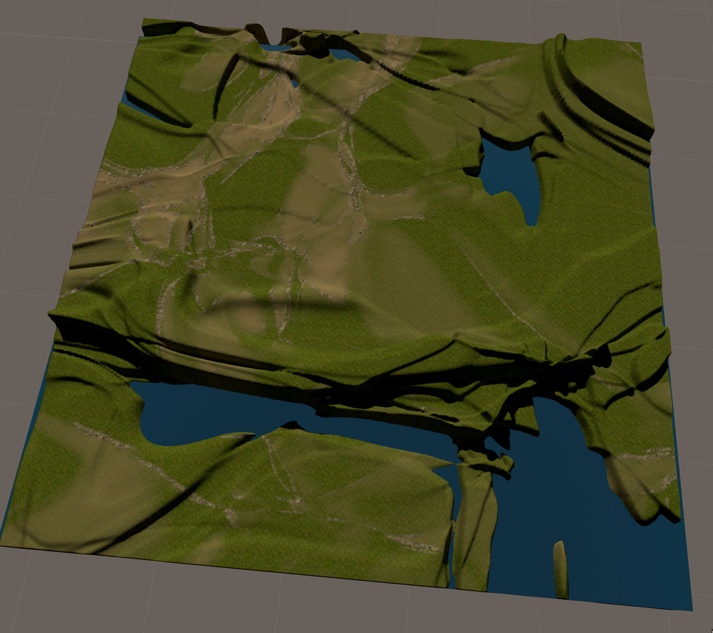 {kind=link}
{kind=link}

So cool! (I also updated the code so you can more easily express richer layers in the CPPN, check out the Jupyter Notebook Generate Maps for more deets.)